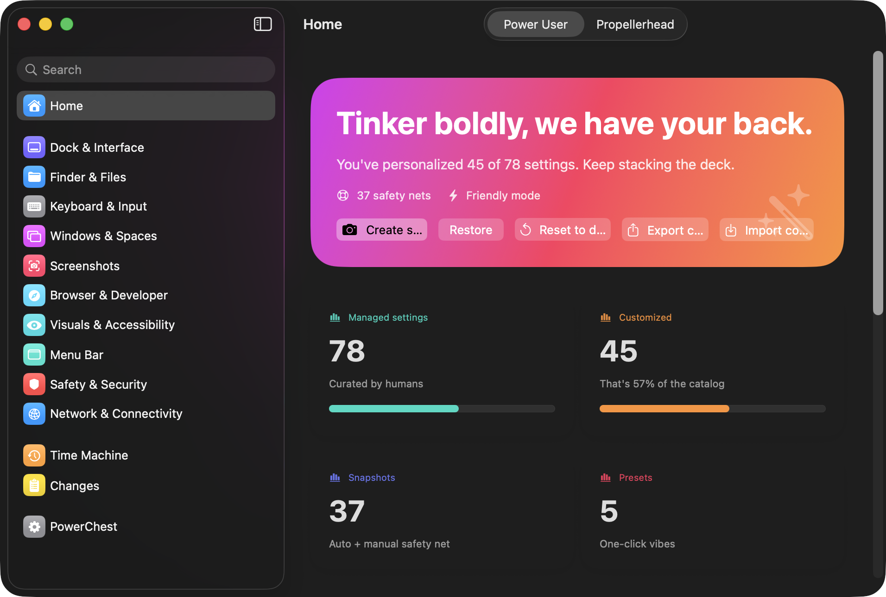
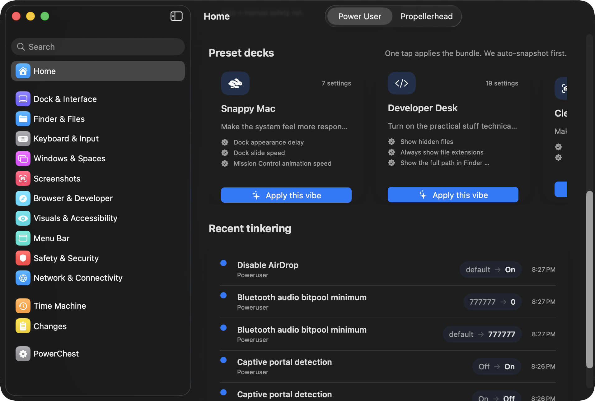
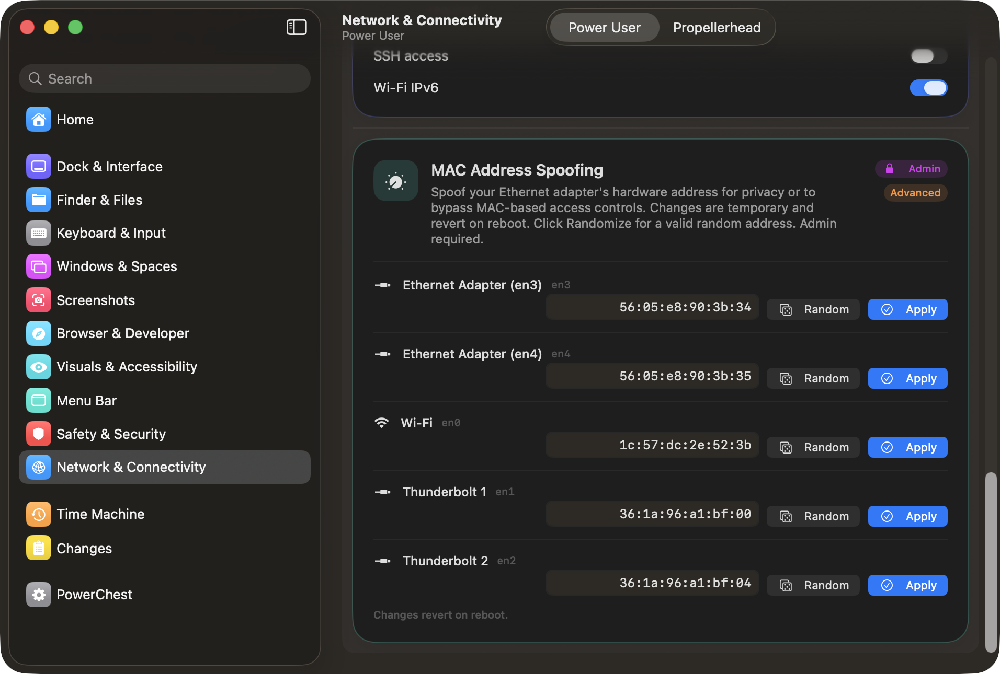
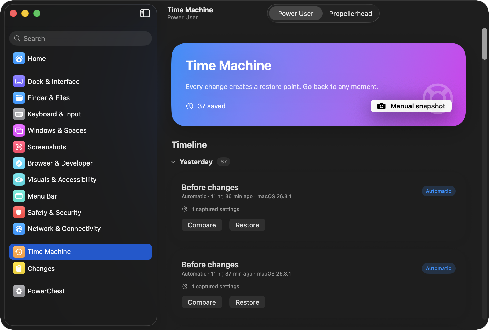

80+ hidden macOS settings surfaced in a System Settings-style interface. Firewall, Dock, Finder, screenshots, network, mouse acceleration — all reversible, all logged, no terminal required.

$ defaults write com.apple.dock autohide-delay -float 0 $ defaults write com.apple.dock autohide-time-modifier -float 0.4 $ killall Dock $ # wait, which blog post was that from? $ # does this still work on Sequoia? $ # how do I undo it?
Everything you need. Nothing you don't.
Dock timing, Finder tweaks, firewall controls, screenshot behavior, mouse acceleration, network privacy, and more. Every setting is hand-verified on current macOS.
Auto-snapshot before every change. Browse by date, compare against current state, restore individual settings or entire snapshots. Never pruned.
Snappy Mac, Developer Desk, Clean Screenshots, Solid UI, Minimal Fuss. Apply a bundle of opinionated changes with one tap. Auto-snapshot first, obviously.
Firewall, stealth mode, SSH, captive portal, MAC spoofing. Uses the native macOS password prompt. Auth cached for ~5 minutes so bulk changes only ask once.
Every change logged with old value, new value, source, and timestamp. Grouped by day. You'll never wonder "wait, what did I change last Thursday?"
Save your setup as a .powerchestprofile. Import on another Mac with a diff preview showing exactly what will change. Portable tinkering.

One-click preset bundles and a timeline of every change you've made.

Firewall, MAC spoofing, SSH, IPv6 — with admin badge and per-interface controls.

Every change auto-creates a restore point. Browse by date, compare, and roll back.
Stats at a glance — managed settings, customizations, snapshots, and quick actions.
These are the ones that justify the app's existence.
Set com.apple.mouse.scaling to -1 for raw, unaccelerated input. Gamers and designers, this one's for you.
Makes your Mac invisible to pings and port scans. One toggle instead of digging through socketfilterfw.
Prevent Finder from littering metadata files on every network share and USB drive you touch.
Per-interface, with validation and one-click randomization. Reverts on reboot by design.
Stop macOS from phoning home to Apple every time you join a Wi-Fi network.
Apple removed the checkbox in Mojave. The setting still works. If text looks thin on your external monitor, this fixes it.
The default bitpool minimum is absurdly low. Slide it up for noticeably better AirPods sound.
Stop macOS from secretly pausing your background apps. Useful when tasks mysteriously stall.
For the people who read the architecture section of READMEs.
Single mutation pipeline with 12-step transaction lifecycle. All changes — manual edits, presets, restores, imports — go through the same path. Auto-snapshot before every mutation. If the snapshot fails, the change aborts.
DefaultsAdapter uses UserDefaults for fast reads, CLI for writes. CommandAdapter handles chflags. PrivilegedAdapter uses AppleScript for admin ops. RestartService does killall for Dock/Finder/SystemUIServer.
Every setting is hand-picked, tested on current macOS, and bundled as Swift data. No runtime discovery, no parsing random plist files, no guessing what keys do.
Built with SwiftUI and @Observable. No Electron, no web views, no Catalyst, no AppKit bridging hacks. System Settings-style layout because that's what your muscle memory expects.
80+ macOS settings across 10 categories. Every one tested on current macOS, documented, and reversible.
Control how Finder displays files, handles extensions, and manages folders.
Dock speed, size, position, window behavior, scroll bars, and app behavior.
Key repeat, accent popup, autocorrect, smart punctuation, and mouse acceleration.
Mission Control, Spaces ordering, window grouping, and multi-display behavior.
Where screenshots go, what format they use, and how they look.
Safari address bar, developer tools, download behavior, and status bar.
Transparency, contrast, motion, cursor size, and font rendering.
Clock format, battery percentage, and status item visibility.
Gatekeeper, quarantine behavior, and crash reporting.
Firewall, DNS privacy, AirDrop, Bluetooth, MAC addresses, and remote access. Some settings require admin.
Take your setup with you. PowerChest exports your entire configuration as a portable .powerchestprofile file you can import on any other Mac.
Set up one Mac exactly how you like it, export the profile, and apply it to your next machine in seconds. The import screen shows a side-by-side diff of exactly what will change before you commit — no surprises.
defaults writemacOS 14+ · Free · No account required · No telemetry